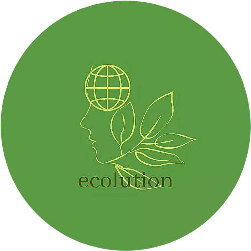

Ecolution
Lasallian Advocates for Mother Earth
Since 2021
Video Advocacy Link:
HOPE – a Group 8 Video Advocacy (Mathematics 9 3rd Quarter Performance Task)
Music Links:


Ecolution
Lasallian Advocates for Mother Earth
Since 2021
Video Advocacy Link:
HOPE – a Group 8 Video Advocacy (Mathematics 9 3rd Quarter Performance Task)
Music Links:
Losing opportunities, time, and chances discouraged us greatly. Losing someone we love was never easy. Losing things and jobs which sustain is will give us heavy burdens to carry. But losing hope will shatter our lives.
The pandemic may have dimmed all the lights that we were all trying to construct in hopes to see a brighter future, left us in pitch black, and devoured all the hope that we have. Know that there will always be an intangible light inside you that only you can choose to dim... so have hope. In our artwork, you can see the cross is positioned at the center and the uppermost part because God is the intangible light. He is the one that will continue to shine within us in midst of the darkness. He is hope and trusting Him is the best way to see a bright side.
The dove symbolizes the Holy Spirit and peace that knocks on each of our hearts and live there. It endures and persists to knock especially when the sky is gray and dark. When you let both enter your hearts, you are letting God to enlighten you, and you are Him, who bears actions and hope for others, like what the growing leaves is signifying. Those actions intends to plant hope to someone that will plant hope to the world as it spreads.
COVID-19 pandemic affected the lives of many people, that's why through our artwork, we wanted relay the message, “Never lose hope.” Trust God for He is the center of everything, always let the Holy Spirit to bring you peace and hope and be your driving force to be a light to someone else. Hope is created at the intersections of faith, perseverance, and love. In this time of the pandemic, one of the greatest gifts you can give to those you love is the invitation to discover hope.
If we learn to lift everything and do the work by doing good, great things will happen at the right time, at the right moment, at the right place, and at the right person. In the middle of this pandemic, hope is important to persevere because it gives us courage to see the brighter side of every difficulties that come. May this be a reminder for us to keep going no matter what whatever shortcomings come to hinder us. Let's be hopeful, always.
OTHER VIDEO LINKS:
Alive | CANADA 4K
HOPE (Christian Inspirational & Motivational Video)
COVID-19 FILM: A Message of Hope (Inspirational Video)
A Group 8 Project in TLE and MATH 9
Copyright © 2021